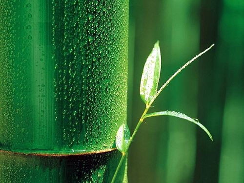
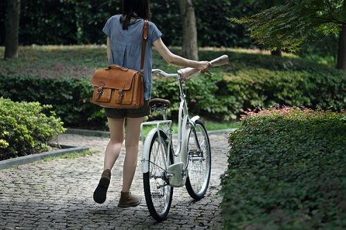

某天早晨，看到一位身着黑色体恤时髦的小青年，边骑自行车边戴着耳机听音乐。马路上扬起的灰尘几乎淹没了他，淹没了街景。可以想象出他的黑体恤10分钟内布满灰尘，出汗的面孔上积下泥浆的情形。一件极其普通的事儿，在恶劣的环境下有时也变得不那么简单。廖敏说，对于一个正常人来说，有几件事情都很重要，那就是吃好、喝好、玩好。可惜，从咸鸭蛋的苏丹红到白木耳的硫酸铜，从卷土重来的三聚氰胺到超标的碳酸饮料，令人不寒而栗的“体验式化学”如影随形。日益恶化的环境，日益加剧的竞争，让这几件事情都不太好实现。
在这个需要环保节能的时代，不知道从何时开始，媒体与一些普通人正在倡导一种“乐活”的生活方式。据说世界上最早的乐活（LOHAS）一族出现在1983年的美国加州，如今加州餐厅只分两种，有机餐厅与非有机餐厅。也有人提出“乐活”最早来自中国，且不论哪种说法正确，什么是“乐活”？的确需要补补课。
中国国际乐活论坛发起人沈立认为：“乐活即花，春有桃花，夏有荷花，秋有菊花，冬有梅花。乐活是天人合一，质朴雅洁，乐活是长久康乐的活法，乐活是慢发展，慢生活，慢运动与慢餐。”

在箱子那儿看到自行车国产老品牌的回归，更名叫：永久C。这个C包含了：
中国 (China)
经典(Classic）
都市(City)
多彩(Colorful)
自行车(Cycle)
文化(Culture)
大多数人都有骑自行车上学、上班的经历，要重新回归到骑自行车的交通方式上，貌似并不简单。比如我上下班经过的路，灰尘漫天，这是最让我难以做决定的因素之一。但是我还是非常想重新拥有一辆自行车，去菜场超市的时候使用，还可以在傍晚骑行来锻炼身体。Low-c应该是LOHAS重要的组成部分，我们可以多走路少开车，多看风景少看屏幕，多养花种菜养猫养狗，少在电脑上用鼠标假装忙活，支持有机农业，废弃化学农业，背上布包与布袋，少用塑料袋（或可反复使用塑料袋），多用手绢少用纸巾。。。有极端的环保主义者，但对于普通人来讲如果能做到身体力行的Low-c，也很好。




10 Responses to “LOHAS”
2010-08-26
嗯。
2010-08-26
“少在电脑上用鼠标假装忙活”……我大概是这种的.
2010-08-27
说起自行车我不得不赞叹下永久牌，实在是太好骑了~~可惜被偷去后再去买没买到这个牌子的。
2010-08-27
Plant vegertables and raise chickens by yourself. A lot of people at my hospital have their own organic farm. No trust on foods at groceries.
2010-08-27
喜欢那辆白色自行车！
我现在基本上都是骑自行车上班，不过是山地赛，平时也会出去骑行
越来越想开一家自己的自行车行！！太想了！
2010-08-27
自己种小盆的草莓、青菜、西红柿、葱、薄荷、rosemary, basil, oregano, thyme, parsley, italian celery。虽然草莓小、青菜瘦、西红柿被青虫当房子住，仍然乐在其中。只要不死在我手里并且在做饭的时候能够抓着剪刀到花园里掐点什么回来扔在锅里，就非常满足。
2010-08-28
“少在电脑上用鼠标假装忙活”，我借来自勉，经常是那种假装瞎忙活的状态，一点都不low-c，汗。。。
2010-08-28
Lifestyles of health and sustainability，MILD生活
离我们好远
当自行车落满灰尘，
我们的体重在悄悄的增加
2010-08-30
骑自行车对大多数人来讲不是环保而是节省.
真要环保就少升级换代电子产品吧,这些东西远比塑料袋更是永垂不朽.
说起来,环保在这里多是用来当修饰的形容词,形容自己的品味标榜自己的责任感,而不是身体力行的动词,呵呵
2010-08-30
照顾不了那么多人，仅仅从自身角度去看待环保的可行性。如果我能做到每天骑车上班，一定不是为了节省，而是为了环保，但目前环境让我做不到这一点。
电子产品的确是“永垂不朽”的，近期购买的很少，多数是以前入手的。
写完后忽然觉得不小心误入了一个所谓时髦的话题。不过“身体力行”的环保行为，也是让这件事情顺其自然的进行，至少我个人不愿意被加上刻意的枷锁。
Leave A Reply
存档只读，评论已关闭。